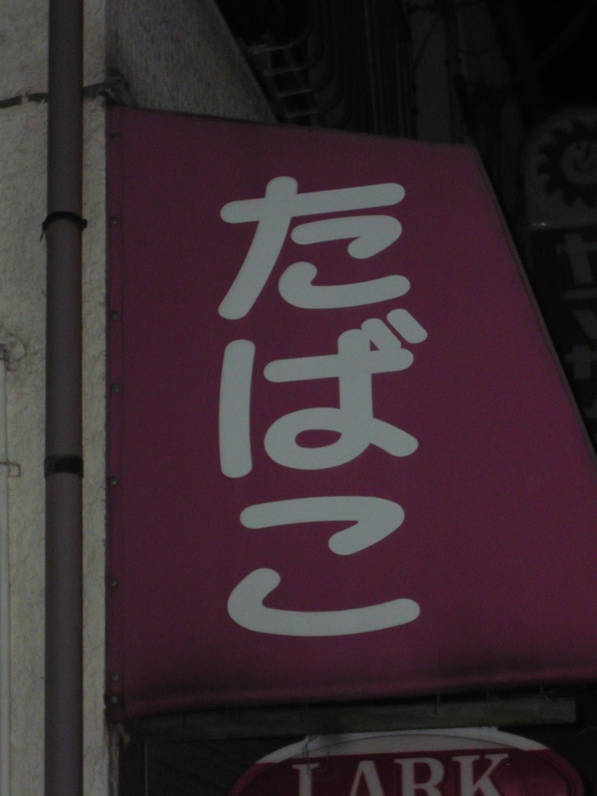
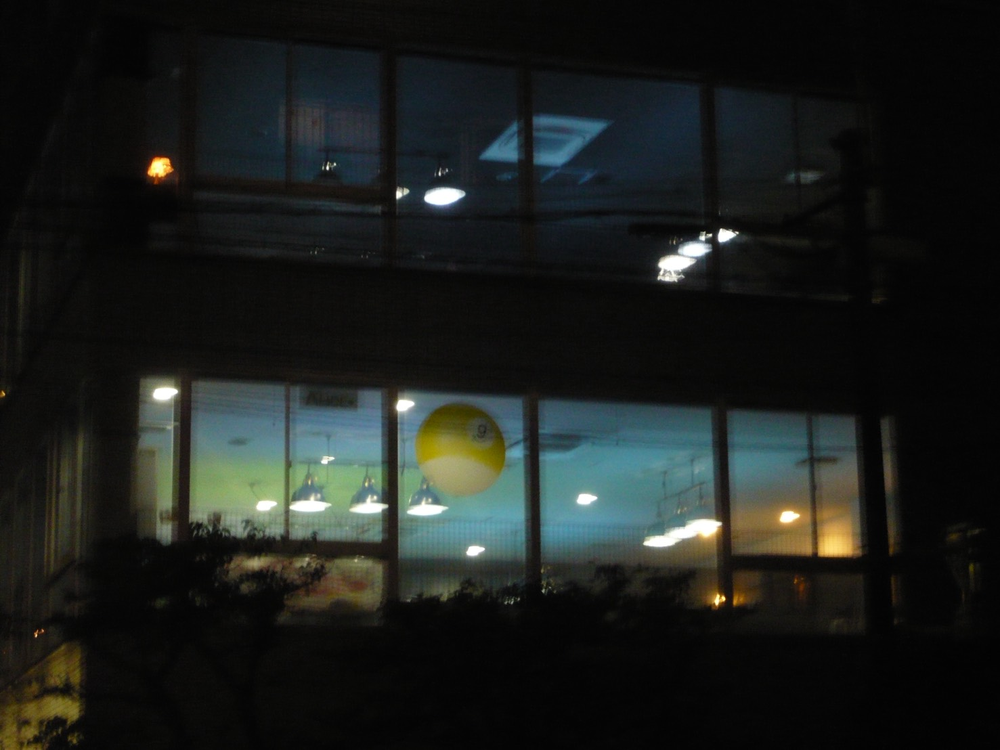

たばこ やまもと
撮影者：前山

説明
東京都大田区のたばこ屋に掲げられた看板。丸みのある太い文字と親しみやすい色合いが、健康への影響が気になるたばこを、どこか身近で手に取りやすい存在に見せています。
ビリヤードALICE
撮影者：前山

説明
東京都大田区のビリヤードALICE。ガラス面に飾られた大きなビリヤードボールが、ビリヤードの店だと一目で伝えます。窓からこぼれる明かりが夜の街に彩りを添え、店内の楽しげな雰囲気へと誘います。